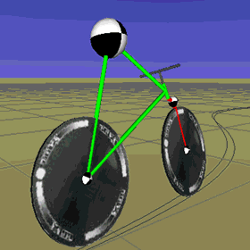

Media Options for Drupal 7
Hai-Nam Nguyen — @jcisio
Meetup May, 2014
http://bit.ly/meetup-05-2014
Introduction /me
- Vietnamese, from Paris, France.
- website builder since 1998
- student until 2011
- engineer at Open Web Solutions
- Drupal contributor since 2008
- Media related companies
- Owner of a tech news portal
- ≅ 20 contrib modules: media and web perf
Plan
- De-facto standard Media suite: Media et al.
- Scald and Asset
- Lightweight solutions
- Nice extras
- About D8
- ...no screenshot
Media suite
- A single module at the beginning.
- 7 modules now, with separate roles
- A media is an file (
file_managedtable) -  Stable and feature-freeze branch vs unstable branch
- Many popular add-on modules only work with 1.x branch
Which branch?
- 1.x is feature-freeze since 2 years:
- Only bug fix or performance improvement
- Limited feature, but better support in contrib
- Officially recommended branch
- 2.x is unstable:
- Really unstable
- Recommended for complex sites
- Keep an eye on version sync
- Use another solution?
Scald and Asset
- Both "French" modules
- Much less known than Media
- Own entity type
- Asset is (and different from Scald):
- A la image_node: simple entity + reuse of contrib field modules
- Less community friendly
- Let's talk Scald ;-)
Scald introduction
- Started in US in 2008
- Continued by OWS with support from Radio France in D6
- Less open
- Very complex
- Poor design (from the Flintstones)
- Many private providers based on node to leverage CCK
- Strategy change in D7
- Community solution: d.o first, documentation
- Reduced complexity: remove features, leverage contrib
- UX rethink
D7 success
- From 20 installs to 1000+ installs
- Adopted by
- Media sites: radios, televisions, magazines
- Institutions
- Drupal shops
- International: France, USA, Senegal, Australia, Danmark, Sweden, Germany, Spain, Hungary, Finland, ...

Scald at the first glance
- Universal Media Asset Management on Drupal
- Unified Media Atom Type
- Simple usage:
- Add new: click a button
- Embed: drag and drop, click a button, double click
- Change properties: right click
- Simple and documented API, active support channel #drupal_scald
(EU time)
- Many types of plugin ("provider"): atom, context, action, transcoder, player...
Scald reasoning
- Not based on File Entity: easier and better support for:
- i18n: "metadata" or fields?
- revisionning
- Not using input filter:
- Access control is compatible with text format caching
- Security improvement
Scald integration
- Unique UI for search, create, reuse
- Works with any RTE
- advanced integration with CKEditor
- Support: Features, Edit, Picture, Entity Translation, Plupload...
- Many atom providers. Multimedia galleries.
- We need help!
Lightweight (standalone) solutions
- Video Embed Field: new video field
- Internet Sources field: reuse text or url field
- Galleries: Flexslider, Galleria
- Responsive: Picture, Adaptive Image Styles
Nice extras: cropping
- Manual crop:
- Auto crop (without editor intervention):
WYSIWYG integration
- Embed: Insert, IMCE
- Arbitrary resizing: Image resize filter
- Preset/responsive: Image autosize filter, Picture
- More control: CKEditor image2 plugin
Performance optimization
- Image Optimize
- Image optimize effect
- Google Pagespeed module, Pagespeed Services
- CDN with optimization support
About Drupal 8
Let's use Media Entity:
- Decoupled solutions: better compatibility, easy swap-out
- Convergence: complex but lightweight
- Many sprints:
- Drupalcon Prague 2013
- Drupalcamp Vienna 2013
- Drupalcamp NYC 2014